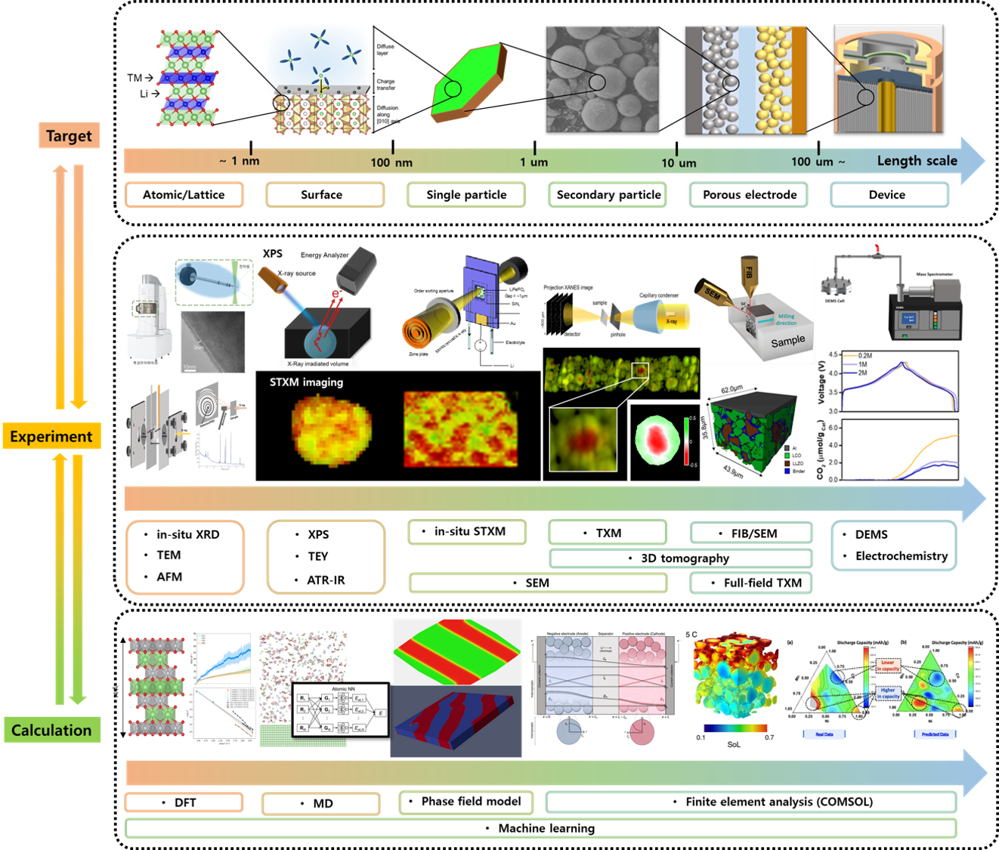

STEAM Project · Battery Data & AI Platform
이차전지 데이터베이스와
머신러닝 모델을 한곳에서
실험 · 계산/시뮬레이션 · 문헌 추출 데이터를 표준화된 카탈로그로 제공하고, 수명 예측과 소재 설계를 위한 머신러닝 모델을 브라우저에서 바로 실행해 볼 수 있는 연구 플랫폼입니다.
공개 데이터셋
16건
머신러닝 모델
9종
인터랙티브 데모
5종
데이터 소스 유형
3종

Database
이차전지 데이터베이스
AFM · SEM · TEM · XRD · EIS 등 실험 데이터 10종과 계산/시뮬레이션, 문헌 추출 데이터를 출처별로 분류한 데이터셋 카탈로그. 각 데이터셋은 저장소 링크로 바로 접근할 수 있습니다.
데이터셋 카탈로그 →
Machine Learning
머신러닝 모델 카탈로그
사이클 수명 · 보관 수명 예측, Bayesian Optimization 기반 합성 조건 추천 등 9종의 모델을 모델 카드 형식으로 제공. 5종은 별도 설치 없이 브라우저에서 바로 실행됩니다.
모델 카탈로그 →인터랙티브 모델 데모
전체 9종 보기 →Bayesian Optimization 기반 NCM811 합성 조건 추천
DEMORandom Forest surrogate가 지정한 탐색 범위에서 예측 방전 용량 상위 3개 합성 조건을 제안합니다.
데모 실행 →전류 변수 사이클 수명 예측
LIVECNN-LSTM과 LightGBM 앙상블로 충·방전 프로토콜에 따른 수명 곡선을 롤아웃 예측합니다.
데모 실행 →충전도 기반 보관 수명 특성 예측
LIVE경과 시간별 용량 측정값으로부터 이후 보관 구간의 용량과 보존율을 재귀적으로 예측합니다.
데모 실행 →